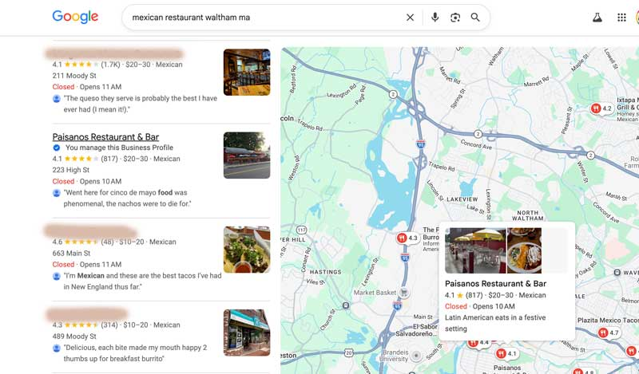
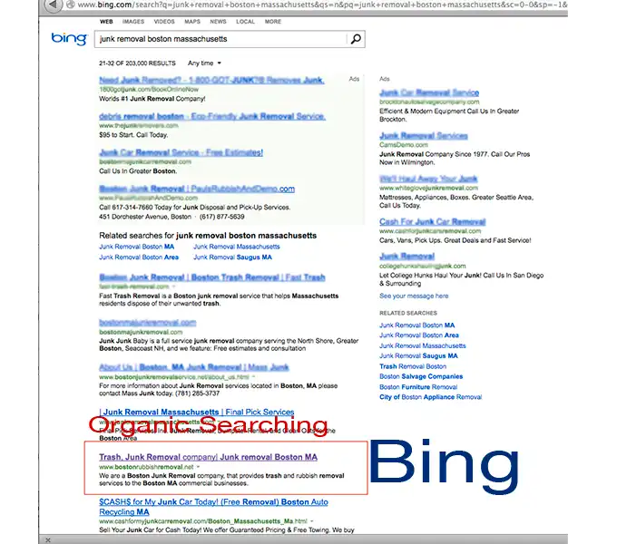

Posicionamiento en Google, marketing digital y Google Ads para pequeños negocios en Everett y el área de Boston — con un consultor que habla su idioma. Aparezca en Google. Consiga más clientes.
GD Pro Web Designs es una agencia SEO en Everett, MA que ayuda a pequeños negocios a aparecer en los primeros resultados locales de Google y en Google Maps. Fundada en 2005 y con certificación de Google, ofrecemos SEO local, optimización del Perfil de Empresa en Google, SEO técnico y Google Ads — a precio de consultor independiente, en español y en inglés.

Contratar a alguien para diseñar su página web y manejar su presencia en Google no debería significar firmar algo que no entiende del todo. Con nosotros, cada llamada, cada reunión y cada reporte se explica en español — qué estamos haciendo, por qué, y qué resultados está viendo su negocio.
Muchos de sus clientes en Everett, Chelsea, Revere e East Boston buscan en español. Le ayudamos a aparecer tanto cuando buscan “restaurante cerca de mí” como cuando buscan “restaurant near me”.
Trabajamos en Everett desde 2005. Cada zona de la ciudad tiene clientes distintos — y una forma distinta de aparecer en Google.
Restaurantes, panaderías, salones y tiendas a lo largo de Broadway compiten por las búsquedas “cerca de mí” de personas que ya están en la zona. Aquí gana quien tiene el Perfil de Empresa en Google completo: horario correcto, fotos recientes y reseñas.
Desde que abrió Encore Boston Harbor junto al río Mystic, llegan más visitantes, trabajadores y nuevos residentes. Muchos buscan en inglés y desde el celular — restaurantes, transporte y servicios de la zona necesitan aparecer para ellos también, no solo para los vecinos.
Negocios locales que viven de clientes que regresan y de la recomendación de boca en boca. En Google, esa recomendación hoy son las reseñas: le ayudamos a pedirlas, responderlas y a que su perfil aparezca cuando alguien busca en español.
Junto a las grandes cadenas del Gateway Center, un negocio pequeño no puede ganar con presupuesto de publicidad. Puede ganar en búsquedas más específicas — su servicio, su ciudad, su idioma — donde las cadenas no compiten.
Más visitas a su página web y más ventas con posicionamiento orgánico local. Consultoría SEO y marketing digital completo para pequeños negocios — desde el posicionamiento en Google hasta los anuncios pagados (PPC, pago por clic).
Aparezca en Google Maps y en los resultados locales de Everett y las ciudades cercanas. Optimizamos su Perfil de Empresa en Google, sus registros en directorios locales y el contenido de su página para llegar a los clientes de su zona.
Más información (en inglés)¿Listo para crecer más allá de Everett? Creamos estrategias de SEO nacional para ampliar su alcance orgánico y posicionarlo en las palabras clave más valiosas de su industria.
Más información (en inglés)Visibilidad inmediata en Google con campañas de pago por clic bien administradas. Elegimos las palabras clave y el público correctos para que cada dólar rinda en su negocio de Everett.
Más información (en inglés)Un plan de marketing digital a la medida de su negocio, que combina SEO, publicidad pagada, redes sociales y contenido para atraer, convertir y retener clientes en Everett y sus alrededores.
Marketing digital en Everett (en inglés)Su perfil en Google Maps es lo primero que ven sus clientes. Lo optimizamos con las categorías, servicios, fotos y publicaciones correctas, y le ayudamos a conseguir más reseñas.
Pida una revisión gratisUna página rápida, adaptada a celulares y lista para Google es la base de su presencia en internet. Diseñamos sitios pensados para posicionarse desde el primer día.
Diseño de páginas web
El SEO local está pensado para negocios que atienden a clientes de una ciudad o región, a diferencia de las empresas con alcance nacional. Como explica Forbes, un negocio local — un contratista de techos, o un restaurante en Everett — necesita una página web dirigida a las personas de su zona y a las palabras que esas personas usan para buscarlo.
Una estrategia clara, paso a paso, para que su negocio en Everett suba en Google — de forma sostenible.
Revisión técnica y de contenido de su sitio actual
Encontramos lo que sus clientes buscan, en español y en inglés
Optimizamos contenido, etiquetas, datos estructurados y velocidad
Enlaces de calidad y registros locales
Contenido que atrae visitas y las convierte en clientes
Reportes mensuales de posiciones, visitas y llamadas
Hemos ayudado a más de 50 negocios locales en Everett, Boston, Chelsea, Malden, Revere y otras ciudades a subir en Google y conseguir más clientes.
Everett y Lynn, MA. Diseño web, desarrollo y SEO local continuo desde su lanzamiento.
Everett, MA. Cliente desde 2015. Diseño web, desarrollo y posicionamiento local.
Revere, MA. SEO y desarrollo web a largo plazo desde 2010.
East Boston, MA. SEO local, optimización del Perfil de Empresa en Google y diseño web.
Con base en Everett, MA — atendemos negocios en todo el este de Massachusetts.
Lo que los dueños de negocios quieren saber antes de contratar a un consultor SEO en Everett.
Pida una auditoría SEO gratis y descubra qué está frenando a su negocio en Google. Sin compromiso. Sin presión. Solo respuestas honestas, en español.
Analizamos su página y le decimos exactamente qué hay que corregir para subir en Everett y sus alrededores.
Pedir Auditoría GratisCuéntenos sobre su negocio y sus metas. Le enviamos una propuesta con precios claros de consultor independiente.
Pedir Cotización